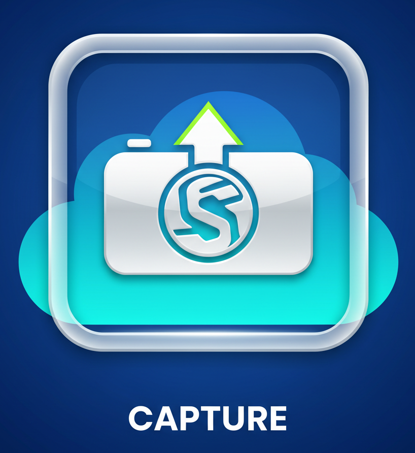
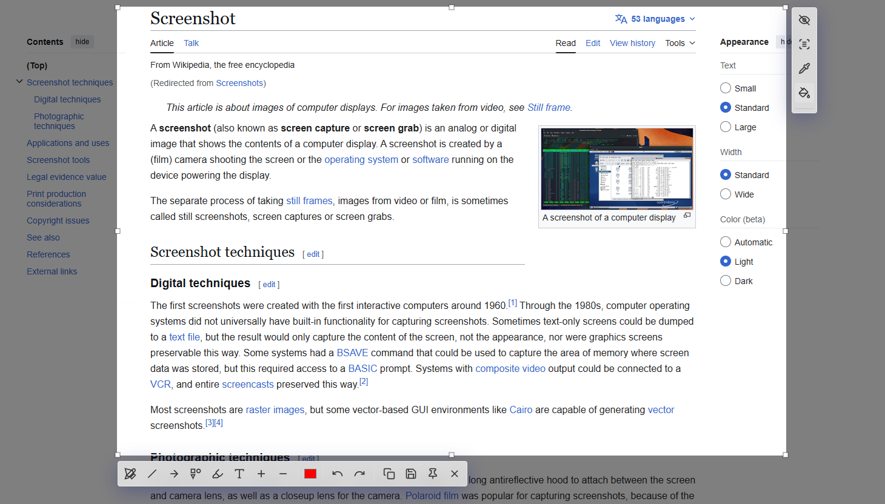

Quick Capture
Select any area with a shortcut and capture instantly.

Windows Screenshot Utility
Capture, annotate, pin, and share screenshots in seconds.
Everything needed for fast screenshot workflows in one lightweight app.
Capture with shortcut, annotate in seconds, then copy/save/pin immediately.
Select any area with a shortcut and capture instantly.
Use pen, shapes, arrows, text, blur, and highlighter tools.
Pin a selected area as a floating sticker while you work.
Copy to clipboard fast or save as PNG, JPG, or WebP.
Select an area and extract text instantly.
Pick accurate colors directly from any screenshot area.
Optional launch on Windows startup so it is always ready.
Lightweight, focused, and fast. It stays out of your way until you need it.
Use next/previous to browse screenshots.

If SnapLight helps your workflow, you can support future updates.
Buy me a coffeeTip: replace the PayPal link with your real PayPal.me URL before publishing.